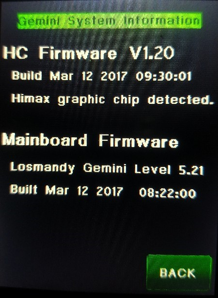

| Interactive Hand-Controller Menus - click on green button to Navigate |
|  |
This menu shows which firmware versions and build dates are being used.
In this case the main unit is using Level 5.21 with a build date of
Mar 12, 2017 or later for the main firmware.
The date of Hand controller is also Mar 12 2018,
with Version 1.20 It shows the build date of the firmware and Version number of the firmware in the Hand controller and the build date of the Firmware and firmware version of the Firmware in the main unit. The Build dates is how we tell what firmware is being used. It also shows the type of graphics chip that the hand controller is using. If the graphics chip is Himax then you have the totally Losmandy designed and built graphics controller (New Version). This version will also allow for flipping the Hand controller display if you have hand controller firmware Version 1.2 or later. Hit the Back button to go back to the HC menu. |